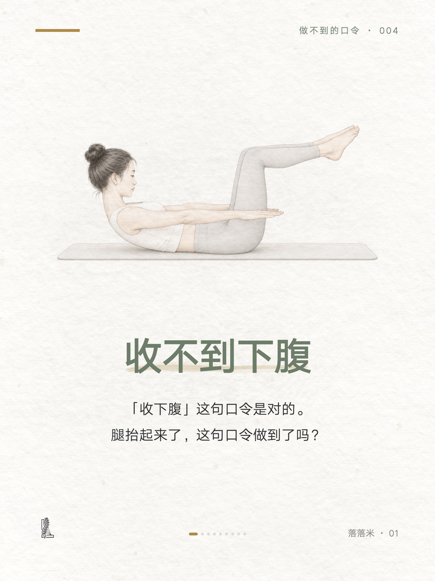
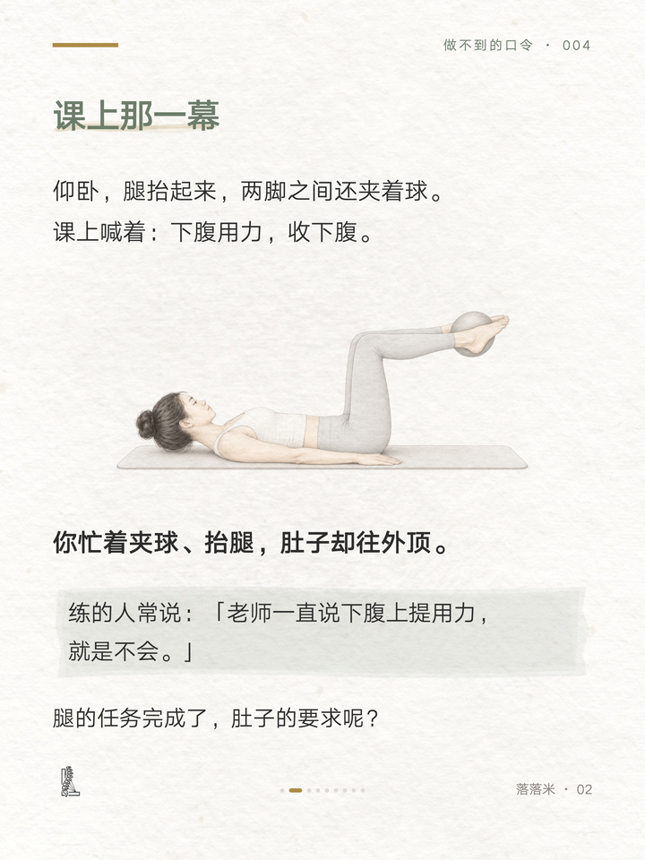
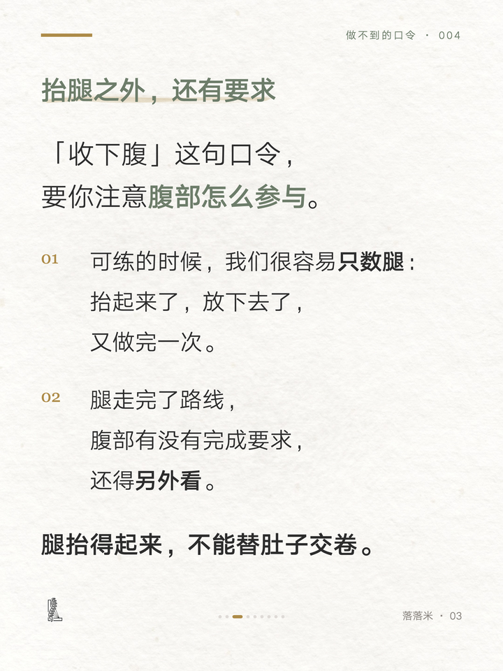
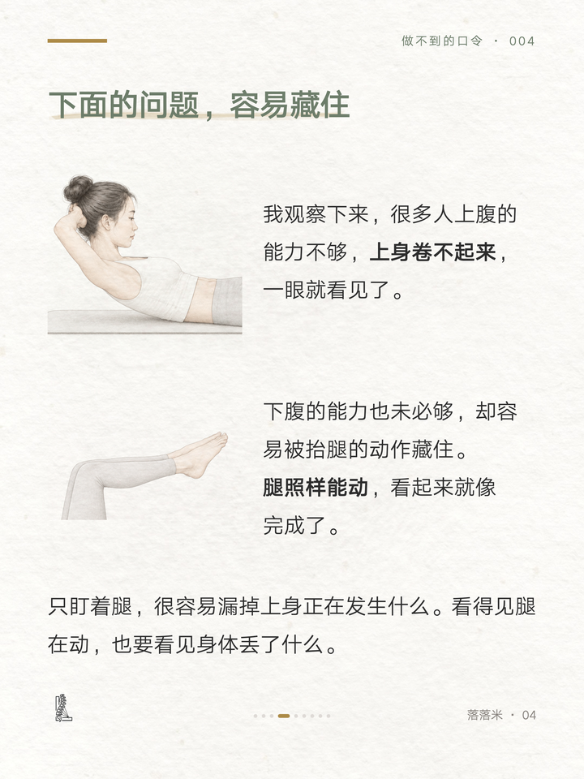
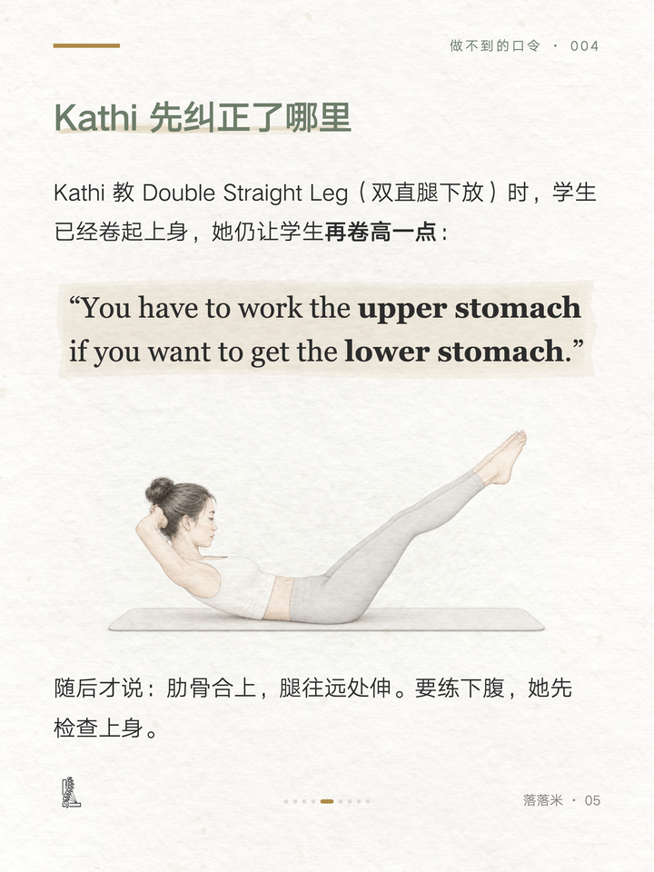
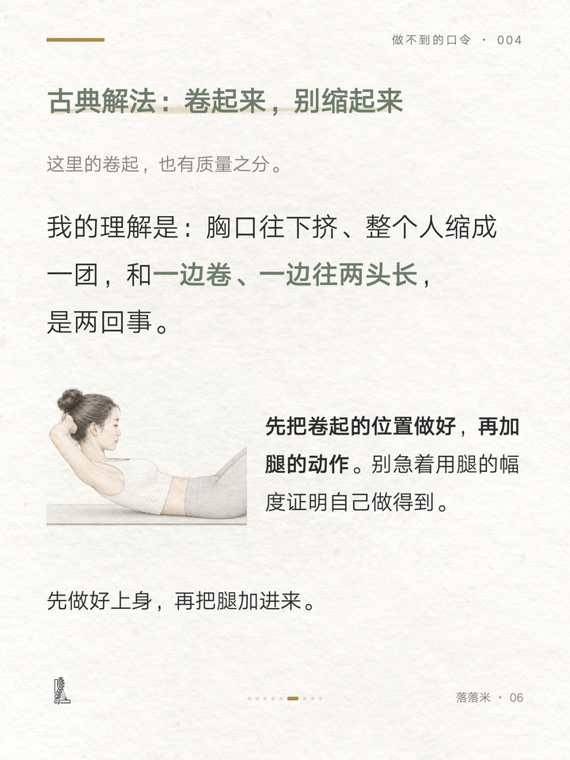
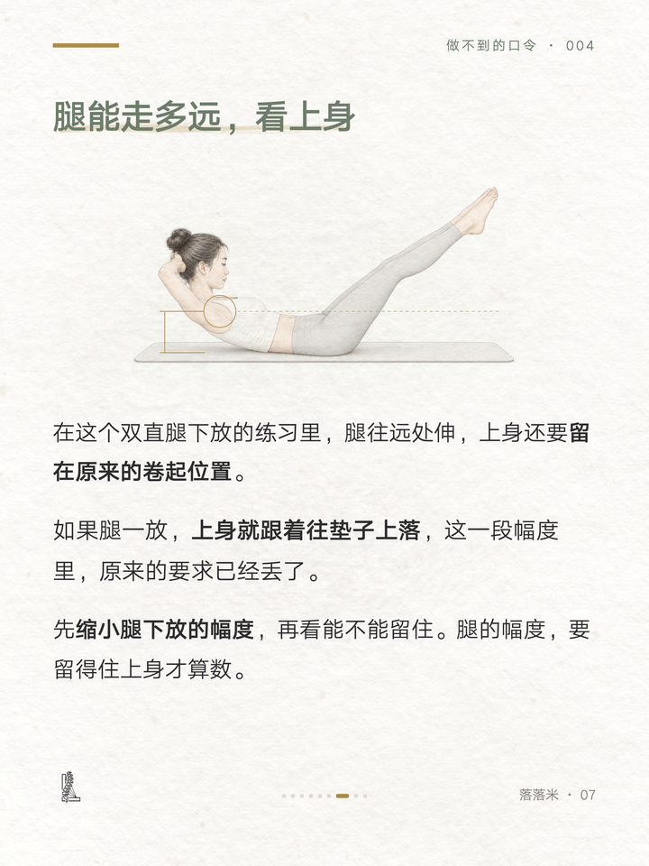
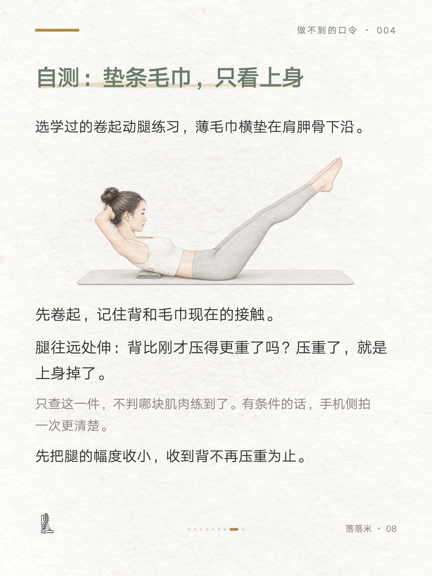
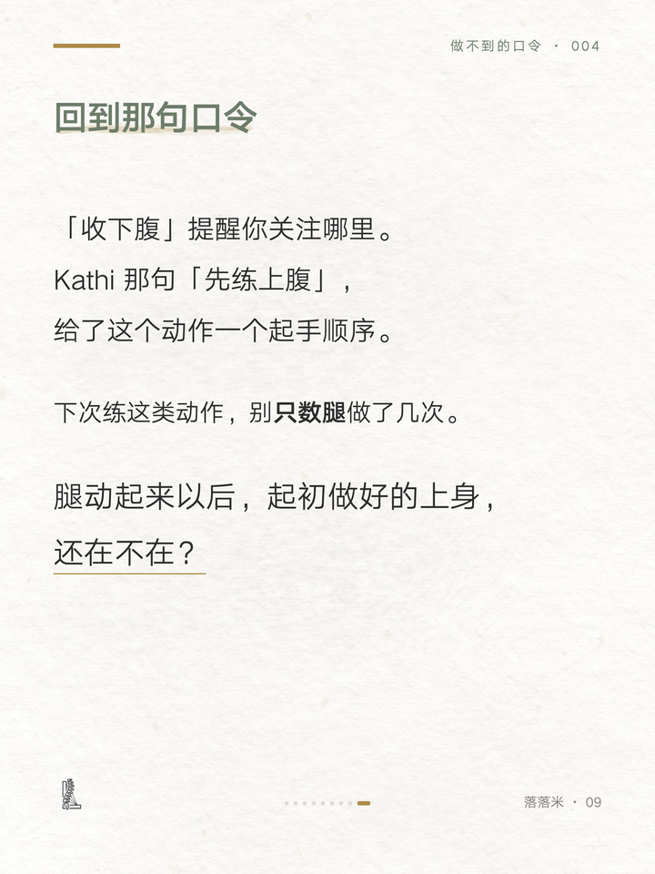

做不到的口令 #004
普拉提收不到下腹，差在上面那一步

1 / 9

2 / 9

3 / 9

4 / 9

5 / 9

6 / 9

7 / 9

8 / 9

9 / 9
← 左右滑动浏览全部卡片 →
老师喊「收下腹」，腿抬起来了，肚子却还是往外顶。
我观察下来，上身卷不起来，问题很显眼；腿照样能动，却容易让人以为腹部的要求也完成了。
Kathi 教双直腿下放时，先让学生把上身再卷高一点，才继续讲腿怎么伸。她那句「要练到下腹，先练上腹」，要放回这个动作里看。
这次先讲古典的处理顺序，再给一个垫毛巾的自测：卷起后记住背和毛巾的接触，腿伸出去时，看背有没有压得更重。第八张只查这一件事。